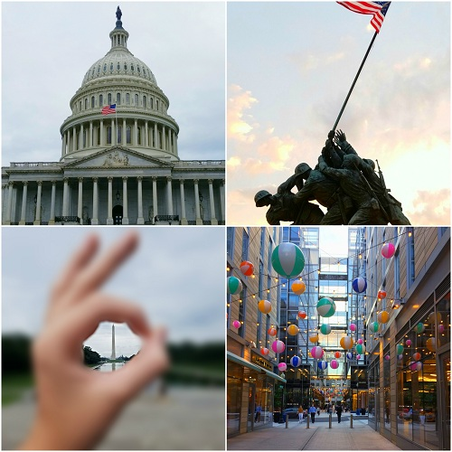

This summer I went to North Carolina and rafted down the Nantahala River, and the French Broad River. We always have a pre-vacation where we do stuff like this, this year we went rafting before we went to the lake for a week. We rafted through a company called NOC or Nantahala Outdoor Center their guides were very nice. My family and I had a great time and will most likely go back next year to raft again.
We stayed in a little town called Marshall on the French Broad River in a bed and breakfast called The Marshall House Inn that you see in the top right of the image below. The town was very small and really neat, it had its own social vibe that you can't find in many other places. It seemed that everyone knew everyone else, the population of the town was only about 900. It was a very cool place to be in for a few days. The only problem was there were only about 3 restaurants run by families!
My family and I also stayed at a lake house on Lake Keowee that we rented. Every year my family comes up from florida and we all throw in money to rent a lake house for a week and all stay there. This summer we all stayed at this lake house for a week, we had about 12 people in the house which was a blast. We brought our boat, wakeboarded, tubbed, and skied, which was a really fun time with my family.
This summer my family and I also flew to Washington D.C. I absolutely loved going to D.C and exploring everything interesting about the city and I got some really cool pictures while I was there. It was interesting to see and the monuments and all the different types of stuff in the city. Here are some of my favorite pictures that I took while I was there.
By Connor